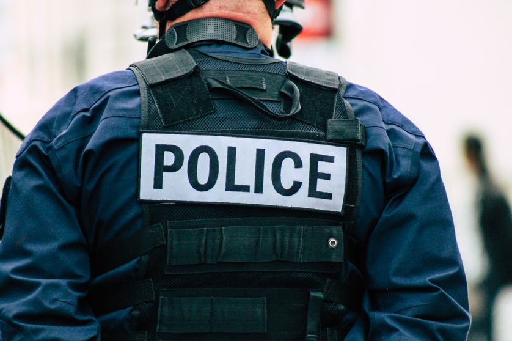

Le métier de police
- Quel est le role du policier ?
Etre policier consiste a repondre aux appelles d'urgences (ex:les crimes,les accidents...)Mais
également au respect de la loi,de maintenir l'ordre et d'assurer la sécurité publique.

Comment devenire policier avec ou sans diplômes ?
- La première solution il faut reussir le concour de gardien de la paix qui consiste a assurer la
protection des biens et des personnes et au maintien de l'ordre publique de jour comme de nuit.
- La deuxième solution est d'avoir soit le bac ou équivalent. Mais pas de panique si vous n'avez
aucun diplôme,vous pouvez dans un premier temps devenir adjoint ou cadet de la république puis
passer le concours interne pour évoluer.
Les spécialités à prendre pour la première sont:
- l'option eppcs
- l'option maths
- l'option ses
Pourquoi faire policier ?
site police france